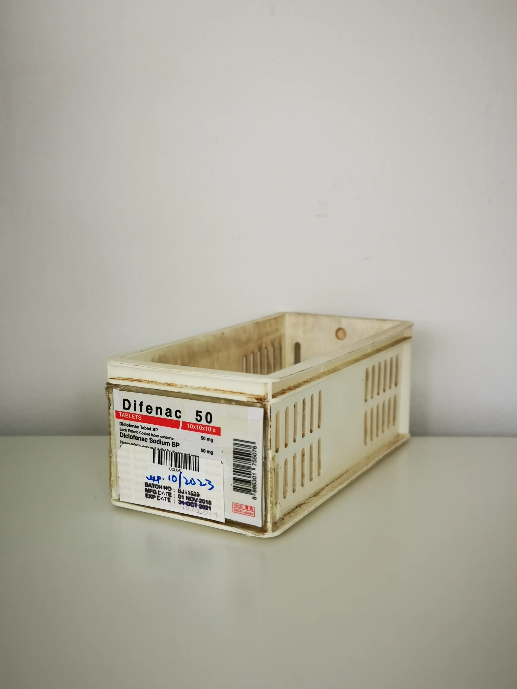

Understanding tracking proof and packing proof is essential for professional buyers in the medical supply industry. Learn how they impact your procurement process.
As a professional buyer in the medical supply industry, you face numerous challenges in ensuring that your orders meet the highest standards of quality and reliability. One critical aspect that often gets overlooked is the importance of tracking proof and packing proof. These elements are not just administrative details; they are vital components of your procurement process that can significantly impact your operational efficiency and customer satisfaction.
Tracking proof and packing proof serve as essential documentation that confirms the integrity of your orders throughout the supply chain. When sourcing products for clinics, spas, or reselling, understanding these proofs can help you mitigate risks associated with shipping errors, product discrepancies, and inventory management. This guide aims to clarify why tracking proof and packing proof matter and how they can enhance your wholesale purchasing experience.
Key Takeaways
- Tracking proof ensures accurate order delivery and helps resolve disputes quickly.
- Packing proof provides verification of the items included in your shipment.
- Both proofs are essential for maintaining compliance with industry standards.
- Understanding these proofs can improve your reorder planning and inventory management.
- Effective communication with suppliers about these proofs can streamline your procurement process.
What this guide covers
- Understanding tracking proof and packing proof
- Relevance for different buyer scenarios
- Comparison criteria for sourcing
- Checklist before requesting a quote
- Logistics questions to consider
- MOQ and reorder planning
- Common buyer FAQs
What buyers should understand first

Tracking proof refers to the documentation that confirms the shipment's journey from the supplier to your location. It often includes tracking numbers and shipping details that allow you to monitor the status of your order in real-time. On the other hand, packing proof is the documentation that verifies the contents of your shipment, ensuring that what you receive matches what you ordered. This may include packing lists or shipping manifests that detail each item included in the package.
For clinics, spas, resellers, and distributors, these proofs are crucial for maintaining accurate inventory levels and ensuring that the products received are suitable for their intended use. By understanding these concepts, buyers can make more informed decisions and avoid costly mistakes.
Which buyers is this most relevant for?
This topic is particularly relevant for professional buyers who manage large volumes of orders and need to ensure accuracy and compliance. For clinics and spas, having reliable tracking and packing proof can prevent service interruptions due to missing or incorrect products. Resellers and distributors benefit from these proofs as they help maintain customer trust and satisfaction by ensuring that products are delivered as promised.
Buyers in regulated markets must also pay close attention to these proofs to ensure compliance with local laws and regulations. Understanding how to evaluate tracking and packing proof can be a game-changer in your procurement strategy.
How to compare options before ordering
When evaluating suppliers and their offerings, consider the following criteria to ensure you make the best choice:
- Product Type: Ensure that the products meet your specific needs and standards.
- Brand Reputation: Research the supplier's history and customer reviews to gauge reliability.
- Packing and Shipping Options: Look for suppliers who offer flexible packing solutions that suit your business model.
- Batch and Expiry Visibility: Ensure that the supplier provides clear information about product batches and expiration dates.
- Supplier Communication: Choose suppliers who are responsive and provide clear documentation.
- Destination Requirements: Confirm that the supplier can meet your shipping needs, including any specific documentation required for your location.
Buyer checklist before requesting a quote

- Confirm product specifications and quantities needed.
- Verify the supplier's ability to provide tracking and packing proof.
- Check for any minimum order quantities (MOQ) that may apply.
- Prepare a list of questions regarding shipping timelines and documentation.
- Ensure you have all necessary information about your shipping destination.
- Review your budget and pricing expectations.
Shipping, packing and documentation questions
When it comes to logistics, having the right questions can save you time and avoid confusion. Here are some realistic questions to consider:
- What is the expected shipping time for my order?
- Will I receive tracking information once my order ships?
- Can you provide packing proof with my shipment?
- What documentation is required for customs clearance?
- How do you handle shipping errors or discrepancies?
MOQ, quotation and reorder planning
When preparing to place an order, consider the following aspects:
- Determine your minimum order quantities (MOQ) based on your inventory needs.
- Identify any product variants you may require.
- Provide complete shipping details to avoid delays.
- Plan for reorder levels to ensure you maintain stock without over-ordering.
SOLA can assist you in confirming current availability and providing wholesale quotations tailored to your needs.
FAQ
What is tracking proof?
Tracking proof is documentation that allows you to monitor the status and location of your shipment throughout the delivery process.
Why is packing proof important?
Packing proof verifies that the items you receive match your order, helping to prevent discrepancies and ensuring quality control.
How can I ensure accurate shipping documentation?
Communicate clearly with your supplier about your documentation needs and confirm that they can provide the necessary proofs.
What should I do if I receive the wrong items?
Contact your supplier immediately to resolve the issue and request corrective action based on the packing proof provided.
How can SOLA help with my procurement needs?
SOLA can provide guidance on sourcing, help confirm availability, and assist with wholesale quotations tailored to your business.
Contact SOLA for wholesale quotation via WhatsApp.
Planning a wholesale request?
Send product names, quantities and destination for a tailored discussion.
Contact SOLA on WhatsApp →General educational content for professional buyers. Not medical, legal, regulatory or import advice.
Image sources: Interior of Snow Clinic Ansan branch in March 2026.jpg 05.jpg by ELIZABETH XIONG (CC BY 4.0, 4284x5712 px); Medicine storage container 4.jpg by Wikimedia Commons contributor (CC0, 2736x3648 px); Balikatan 25- U S , Philippine forces construct multi-purpose warehouse, prepare medical supplies to local community (8962073).jpg by Lance Cpl. Roger Annoh (Public domain, 7403x4938 px).